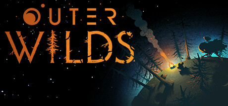

Suntem cel mai nou și mai curajos program spațial de pe Timber Hearth. Misiunea noastră este explorarea sistemului solar și descoperirea secretelor lăsate în urmă de specia antică Nomai.

Conform protocolului, această bază de date este împărțită în mai multe secțiuni esențiale pentru orice explorator nou. Iată ce conține fiecare:
Pagina curentă, care oferă o viziune de ansamblu asupra programului nostru spațial și un ghid de navigare.
Enciclopedia sistemului nostru solar, o listă a destinațiilor periculoase și manualul cu echipamentul exploratorului.
Formularul oficial de recrutare. Creează profilul personal complet și setează-ți preferințele pentru expediție.
O colecție de înregistrări vizuale și jurnale de bord recuperate din expedițiile anterioare ale colegilor noștri.
O reprezentare grafică live a sistemului nostru solar, vitală pentru a te orienta în spațiu printre planete.
Panoul de bord interactiv al navei. Analizează datele telemetrice live, testează radarul de cartografiere și gestionează structura bazei de date.